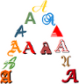

Data Types and Variables
Introduction
You have programmed low-level languages like C, C++ or other similar programming languages? Therefore, you might think you know already enough about data types and variables? You know a lot, that's right, but not enough for Python. So it's worth to go on reading this chapter on data types and variables in Python. There is a dodgy differences in the way Python and C deal with variables. There are integers, floating point numbers, strings, and many more, but things are not the same as in C or C++.If you want to use lists or associative arrays in C e.g., you will have to construe the data tpye list or associative arrays from scratch, i.e. design memory structure and the allocation management. You will have to implement the necessary search and access methods as well. Python provides power data types like lists and associative arrays, called dict in Python, as a genuine part of the language.
So, this chapter is worth reading both for beginners and for advanced programmers in other programming languages.
Variables
 As the name implies, a variable is something which can change. A variable is a way of referring
to a memory location used by a computer program.
A variable is a symbolic name for this physical location. This memory location contains values,
like numbers, text or more complicated types. We can use this variable to tell the computer
save some data in this location or to retrieve some data from this location.
As the name implies, a variable is something which can change. A variable is a way of referring
to a memory location used by a computer program.
A variable is a symbolic name for this physical location. This memory location contains values,
like numbers, text or more complicated types. We can use this variable to tell the computer
save some data in this location or to retrieve some data from this location.
A variable can be seen as a container (or some say a pigeonhole) to store certain values.
While the program is running, variables are accessed and sometimes changed, i.e. a new value
will be assigned to a variable.
One of the main differences between Python and strongly-typed languages like C, C++ or Java
is the way it deals with types. In strongly-typed languages every variable must have a unique
data type. E.g. if a variable is of type integer, solely integers can be saved in the variable during
the duration of the the program. In Java or C, every variable has to be declared before it can be
used. Declaring a variable means binding it to a data type.
It's a lot easier in Python. There is no declaration of variables required in Python. It's not even
possible. If there is need of a variable, you think of a name and start using it as a variable.
Another remarkable aspect of Python: Not only the value of a variable may change during program
execution but the type as well. You can assign an integer value to a variable, use it as an integer
for a while and then assign a string to the same variable.
In the following line of code, we assign the value 42 to a variable i:
i = 42The equal "=" sign in the assignment shouldn't be seen as an "equal sign". It should be "read" or interpreted as "is set to", meaning in our example "the variable i is set to 42". Now we will increase the value of this variable by 1:
>>> i = i + 1 >>> print(i) 43 >>>
Variables vs. Identifiers
The terms variables and identifiers are very often erroneously used synonymously. Simply put, the name of a variable is an identifier, but a variable is "more than a name". A variable has many aspects. It is a name, in most cases a type, a scope, and above all a value. Besides this, an identifier is not only used for variables. An identifier can denote various entities like variables, types, labels, subroutines or functions, packages and so on.Naming Identifiers of Variables
Every language has rules for naming identifiers. The rules in Python3 are the following:A valid identifier is a non-empty sequence of characters of any length with:
- the start character of an identifier can be the underscore "_" or a capital or lower case letter. Letter in Python3 mean any letter - even those from non-English languages like the German Umlaute "Ä", "ö".
- the characters following the start character can be anything which is permitted as a start character plus the digits. Digit is, what Unicode considers to be a digit. Some non-whitespace characters are allowed as well.
- Just a warning for Windows-spoilt users: Identifiers are case-sensitive
- Python keywords are not allowed as identifier names
Python Keywords
No identifier can have the same name as one of the Python keywords, although they are obeying the above naming conventions:and, as, assert, break, class, continue, def, del, elif, else, except, finally, for, from, global, if, import, in, is, lambda, nonlocal, not, or, pass, raise, return, try, while, with, yield
Changing Data Types and Storage Locations
Programming means data processing. Data in a Python program is represented by objects. These objects can be- built-in, i.e. objects provided by Python, or
- objects from extension libraries or
- created in the application by the programmer.
Numbers
Python's built-in core data types are in some cases also called object types. There are four built-in data types for numbers:
- Integer
- Normal integers
e.g. 4321 - Octal literals (base 8)
A number prefixed by 0o (zero and a lowercase "o" or uppercase "O") will be interpreted as an octal number
example:
>>> a = 0o10
>>> print(a)
8 - Hexadecimal literals (base 16)
Hexadecimal literals have to be prefixed either by "0x" or "0X".
example:
>>> hex_number = 0xA0F
>>> print(hex_number)
2575 - Binary literals (base 2)
Binary literals can easily be written as well. They have to be prefixed by a leading "0", followed by a "b" or "B":
>>> x = 0b101010 >>> x 42 >>>
>>> x = hex(19) >>> x '0x13' >>> type(x) <class 'str'> >>> x = bin(65) >>> x '0b1000001' >>> x = oct(65) >>> x '0o101' >>> oct(0b101101) '0o55' >>>Integers in Python3 can be of unlimeted size
>>> x = 787366098712738903245678234782358292837498729182728 >>> print(x) 787366098712738903245678234782358292837498729182728 >>> x * x * x 488123970070638215986770162105731315538827586091948617997871122950228891123960901918308618286311523282239313708275589787123005317148968569797875581092352 >>>
- Normal integers
- Long integers
Python 2 has two integer types: int and long. There is no "long int" in Python3 anymore. There is only one "int" type, which contains both "int" and "long" from Python2. This means that the following code fails in Python 3:>>> 1L File "<stdin>", line 1 1L ^ SyntaxError: invalid syntax >>> x = 43 >>> long(x) Traceback (most recent call last): File "<h;stdin>", line 1, in <module> NameError: name 'long' is not defined >>> - Floating-point numbers
for example: 42.11, 3.1415e-10 - Complex numbers
Complex numbers are written as<real part> + <imaginary part>j
examples:
>>> x = 3 + 4j
>>> y = 2 - 3j
>>> z = x + y
>>> print(z)
(5+1j)
Strings
The task of the first-generation computers in the fourties and fifties had been - due to technical restraints -
focussed on number processing. Text processing had been just a dream that time. Nowadays, one of the main tasks
of computers is text processing in all its varieties; the most prominent applications are search engines like
Google. To enable text processing programming languages need suitable data types. Strings are used in all modern
programming languages to store and process textual information. Logically, a string - like any text - is a sequence
of characters. The question remains what a character consists of. In a book, or in a text like the one your are
reading now, characters consist of graphical shapes, so-called graphemes, consisting of lines, curves and
crossings in certain angles or positions and so on. The ancient Greeks associated with the word the engraving
on coins or the stamps on seals.

In computer science or computer technology, a character is a unit of information.
These Characters correspond to graphemes, the fundamental units of written or printed language.
Before Unicode came into usage, there was a one to one relationship between bytes and characters, i.e. every
character - of a national variant, i.e. not all the characters of the world - was represented by a single byte.
Such a character byte represents the logical concept of this character and the class of graphemes of this character.
In the image on the right side, we have depicted various representations of the letter "A", i.e. "A" in different
fonts. So in printing there are various graphical representations or different "encodings" of the abstract concept of
the letter A. (By the way, the letter "A" can be ascribed to an Egyptian hieroglyph with a pictogram of an ox.)
All of these graphical
representations having certain features in common. In other words, the meaning of a character or a written or
printed text doesn't depend on the font or writing style used. On a computer the capital A is encoded in binary
form. If we use ASCII it is encoded - like all the other characters - as the byte 65.
ASCII is restricted to 256 bytes or characters. This is enough for languages like English, German and French, but
by far not sufficient for Chinese, Japanese and Korean. That's where Unicode gets into the game. Unicode is a
standard designed to represent every character from every language, i.e. it can handle any text of the world's
writing systems. These writing systems can also be used simultaneously, i.e. Roman alphabet mixed with cyrillic
or even Chinese characters. Each letter or character is represented by Unicode as a 4-byte number. E.g. "A" has
the value U+0041. While ASCII is restricted to 256 characters per encoding, Unicode has virtually no real limitiation.
Theoretically, there are 2564 (more than 4.29 millions, due to coding restrictions there are "only" 1,112,064
characters possible) characters possible. In fact with a little bit
more than 100,000 characters specified less than 1 % of the Unicode number space is used. But there remains the
question of how to encode Unicode characters. We could use 4 bytes per character which would be a one to one
mapping from Unicode to the encoding. But this is a waste of memory space; every previous ASCII document would
be 4 times as large in Unicode. There are different encodings for Unicode:
|
|
|---|---|
| Name | Description |
| UTF-32 |
It's a one to one encoding, i.e. it takes each Unicode character (a 4-byte number)
and stores it in 4 bytes. One advantage of this encoding is that you can find the Nth character of a string in
linear time, because the Nth character starts at the 4×Nth byte. A serious disadvantage of this approach is due
to the fact that it needs four bytes for every character. |
| UTF-16 |
Hardly anybody needs more than 65535 characters, so UTF-16, which needs 2 bytes,
is a more space efficient alternative to UTF-32. But it is very difficult to access characters outside the range
0 - 65535, i.e. characters from the so-called "astral plane" Another problem of both UTF-32 and UTF-16 consists in the byte ordering, which is depending on the operating system. |
| UTF-8 |
UTF8 is a variable-length encoding system for Unicode, i.e. different characters
take up a different number of bytes. ASCII characters use solely one byte per character, which are even the same
as the used to be for the first 128 characters (0–127), i.e. these characters in UTF-8 are indistinguishable
from ASCII. But the so-called "Extended Latin" characters like the Umlaute ä, ö and so on take up two bytes.
Chinese characters need three bytes. Finally, the very seldom used characters of the "astral plane"
need four bytes to be encoded in UTF-8.
A Disadvantage of this approach is that finding the Nth character is more complex, the longer the string, the longer it takes to find a specific character. |
String, Unicode and Python
After this lengthy but necessary introduction, we finally come to python and the way it deals with strings. All strings in Python 3 are sequences of "pure" Unicode characters, no specific encoding like UTF-8.Strings are defined by quotes:
- single quotes (')
'This is a string with single quotes' - double quotes (")
"Obama's dog is called Bo"" - triple quotes, both single (''') and (""")
'''String in triple quotes can extend
over multiple lines, like this on, and can contain
'single' and "double" quotes.'''

It's possible to start counting the indices from the right. In this case negative numbers are used, starting with -1 for the most right character.

Some operators and functions for strings
- Concatenation
Strings can be glued together (concatenated) with the + operator:
"Hello" + "World" -> "HelloWorld" - Repetition
String can be repeated or repeatedly concatenated with the asterisk operator "*":
"*-*" * 3 -> "*-**-**-*" - Indexing
"Python"[0] -> "P" - Slicing
Substrings can be created with the slice or slicing notation, i.e. two indices in square brackets separated by a colon:
"Python"[2:4] -> "th"

- Size
len("Python") -> 6
Immutable Strings
Like strings in Java and unlike C or C++, Python strings cannot be changed. Trying to change an indexed position will raise an error:>>> s = "Some things are immutable!" >>> s[-1] = "." Traceback (most recent call last): File "<stdin>", line 1, in <module> TypeError: 'str' object does not support item assignment >>>
A String Pecularity
Strings show a special effect, which we will illustrate in the following example. We will need the "is"-Operator. If both a and b are strings, "a is b" checks if they have the same identity, i.e. share the same memory location. If "a is b" is True, then is trivially follows that "a == b" has to be True as well. But "a == b" True doesn't imply that "a is b" is True as well!Let's have a look at how strings are stored in Python:
>>> a = "Linux" >>> b = "Linux" >>> a is b TrueOkay, but what happens, if the strings are longer? We use the longest village name in the world in the following example. It's a small village with about 3000 inhabitants in the South of the island of Anglesey in the Nort-West of Wales:
>>> a = "Llanfairpwllgwyngyllgogerychwyrndrobwllllantysiliogogogoch" >>> b = "Llanfairpwllgwyngyllgogerychwyrndrobwllllantysiliogogogoch" >>> a is b TrueNothing has changed to our first "Linux" example. But what works for Wales doesn't work e.g. for Baden-Württemberg in Germany:
>>> a = "Baden-Württemberg" >>> b = "Baden-Württemberg" >>> a is b False >>> a == b TrueYou are right, it has nothing to do with geographical places. The special character, i.e. the hyphen, is to "blame".
>>> a = "Baden!" >>> b = "Baden!" >>> a is b False >>> a = "Baden1" >>> b = "Baden1" >>> a is b True
Escape Sequences in Strings
To end our coverage of string in this chapter, we will introduce some escape characters and sequences. The backslash (\) character is used to escape characters, i.e. to "escape" the special meaning, which this character would otherwise have. Examples for such characters are newline, backslash itself, or the quote character. String literals may optionally be prefixed with a letter 'r' or 'R'; these strings are called raw strings. Raw strings use different rules for interpreting backslash escape sequences.| Escape Sequence | Meaning Notes |
|---|---|
| \newline | Ignored |
| \\ | Backslash (\) |
| \' | Single quote (') |
| \" | Double quote (") |
| \a | ASCII Bell (BEL) |
| \b | ASCII Backspace (BS) |
| \f | ASCII Formfeed (FF) |
| \n | ASCII Linefeed (LF) |
| \N{name} | Character named name in the Unicode database (Unicode only) |
| \r | ASCII Carriage Return (CR) |
| \t | ASCII Horizontal Tab (TAB) |
| \uxxxx | Character with 16-bit hex value xxxx (Unicode only) |
| \Uxxxxxxxx | Character with 32-bit hex value xxxxxxxx (Unicode only) |
| \v | ASCII Vertical Tab (VT) |
| \ooo | Character with octal value ooo |
| \xhh | Character with hex value hh |
Byte Strings
Python 3.0 uses the concepts of text and (binary) data instead of Unicode strings and 8-bit strings. Every string or text in Python 3 is Unicode, but encoded Unicode is represented as binary data. The type used to hold text is str, the type used to hold data is bytes. It's not possible to mix text and data in Python 3; it will raise TypeError.While a string object holds a sequence of characters (in Unicode), a bytes object holds a sequence of bytes, out of the range 0 .. 255, representing the ASCII values.
Defining bytes objects and casting them into strings:
>>> x = b"Hallo"
>>> t = str(x)
>>> u = t.encode("UTF-8")
Variable Types
As we have said above, the type of a variable can change during the execution of a script. Or to be precise: A new object, which can be of any type, will be assigned to it. We illustrate this in our following example:i = 42 # data type is implicitly set to integer i = 42 + 0.11 # data type is changed to float i = "fourty" # and now it will be a stringPython automatically takes care of the physical representation for the different data types, i.e. an integer values will be stored in a different memory location than a float or a string.
What's happening, when we make assignments. Let's look at the following piece of code:
>>> x = 3 >>> y = x >>> y = 2
 The first assignment is unproblematic: Python chooses a memory location for x and saves the
integer value 3. The second assignment is more worthwhile: Intuitively, you may assume that
Python will find another location for the variable y and will copy the value of 3 in this
place. But Python goes his own way, which differs from our intuition and the ways of C and C++.
As both variables will have the same value after the assignment, Python lets y point to the
memory location of x.
The first assignment is unproblematic: Python chooses a memory location for x and saves the
integer value 3. The second assignment is more worthwhile: Intuitively, you may assume that
Python will find another location for the variable y and will copy the value of 3 in this
place. But Python goes his own way, which differs from our intuition and the ways of C and C++.
As both variables will have the same value after the assignment, Python lets y point to the
memory location of x.The critical question arises in the next line of code. Y will be set to the integer value 2. What will happen to the value of x? C programmers will assume, that x will be changed to 2 as well, because we said before, that y "points" to the location of x. But this is not a C-pointer. Because x and y will not share the same value anymore, y gets his or her own memory location, containing 2 and x sticks to 3, as can be seen in the animated graphics on the right side.
But what we said before can't be determined by typing in those three lines of code. But how can we prove it? The identity function id() can be used for this purpose. Every instance (object or variable) has an identity, i.e. an integer which is unique within the script or program, i.e. other objects have different identities.
So, let's have a look at our previous example and how the identities will change:
>>> x = 3 >>> print(id(x)) 137220896 >>> y = x >>> print(id(y)) 137220896 >>> y = 2 >>> print(id(y)) 137220880 >>> print(id(x)) 137220896 >>>
Integer Division
Integer division has been a continous source of errors in previous versions, i.e. before Python3. Let's divide 10 by 3 in Python 2.6.5:$ python Python 2.6.5 (r265:79063, Apr 16 2010, 13:57:41) [GCC 4.4.3] on linux2 Type "help", "copyright", "credits" or "license" for more information. >>> 10 / 3 3 >>>
Though being logical, it's not what most people expect. The idea is, that we are dividing an integer by an integer so the result should be an integer again. This is done by "floor division", i.e. truncating fractional digits. No rounding is used, as we can see:
$ python Python 2.6.5 (r265:79063, Apr 16 2010, 13:57:41) [GCC 4.4.3] on linux2 Type "help", "copyright", "credits" or "license" for more information. >>> 11 / 3 3 >>>To avoid this, Python3 performs "true" division, i.e. integer by integer results in a float number:
$ python3 Python 3.1.2 (r312:79147, Sep 27 2010, 09:57:50) [GCC 4.4.3] on linux2 Type "help", "copyright", "credits" or "license" for more information. >>> x = 11 >>> y = 3 >>> z = x / y >>> type(z) <class 'float'> >>> print(z) 3.66666666667 >>> z = 12 >>> z = x / y >>> type(z) <class 'float'> >>> print(z) 3.66666666667 >>>If you need integer division in Python3, you have to use floor division "//" explicitly:
$ python3 Python 3.1.2 (r312:79147, Sep 27 2010, 09:57:50) [GCC 4.4.3] on linux2 Type "help", "copyright", "credits" or "license" for more information. >>> z = 10 // 3 >>> type(z) <class 'int'> >>> print(z) 3 >>>